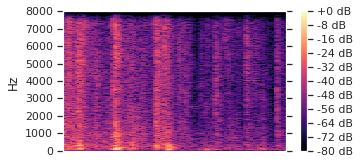

Audio Demos for 3-Source Universal Sound Separation
Jail door + auto crash + morse code
| Mixture |
|
||
|---|---|---|---|
| Ground-truth sources |
SI-SDR = -0.07 dB |
SI-SDR = -2.91 dB |
SI-SDR = -7.31 dB |
| Method | Separated source 0 | Separated source 1 | Separated source 2 |
| iTDCN++ 2.5ms STFT |
SI-SDR = 1.96 dB |
SI-SDR = 2.36 dB |
SI-SDR = -13.98 dB |
| iTDCN++ 2.5ms learned |
SI-SDR = 1.84 dB |
SI-SDR = 0.12 dB |
SI-SDR = -32.22 dB |
Dice roll + phone hangups + bottle pour
| Mixture |
|
||
|---|---|---|---|
| Ground-truth sources |
SI-SDR = 1.89 dB |
SI-SDR = -2.35 dB |
SI-SDR = -15.30 dB |
| Method | Separated source 0 | Separated source 1 | Separated source 2 |
| iTDCN++ 2.5ms STFT |
SI-SDR = 15.83 dB |
SI-SDR = 14.23 dB |
SI-SDR = 7.14 dB |
| iTDCN++ 2.5ms learned |
SI-SDR = 14.30 dB |
SI-SDR = 13.78 dB |

SI-SDR = 8.94 dB |
Rocks on shale + metal can on concrete + metal door slams
| Mixture |
|
||
|---|---|---|---|
| Ground-truth sources |
SI-SDR = -27.44 dB |
SI-SDR = -0.86 dB |
SI-SDR = 1.16 dB |
| Method | Separated source 0 | Separated source 1 | Separated source 2 |
| iTDCN++ 2.5ms STFT |
SI-SDR = -3.89 dB |
SI-SDR = 5.42 dB |
SI-SDR = 7.19 dB |
| iTDCN++ 2.5ms learned |
SI-SDR = -6.61 dB |
SI-SDR = 8.18 dB |

SI-SDR = 9.22 dB |
Insect chitter + game piece moves + rocks on dirt
| Mixture |
|
||
|---|---|---|---|
| Ground-truth sources |
SI-SDR = -0.18 dB |
SI-SDR = -11.06 dB |
SI-SDR = -1.07 dB |
| Method | Separated source 0 | Separated source 1 | Separated source 2 |
| iTDCN++ 2.5ms STFT |

SI-SDR = 9.53 dB |
SI-SDR = -10.17 dB |
SI-SDR = 10.05 dB |
| iTDCN++ 2.5ms learned |
SI-SDR = 8.98 dB |
SI-SDR = -11.07 dB |
SI-SDR = 12.11 dB |
Water splash + ice water pour + door open
| Mixture |
|
||
|---|---|---|---|
| Ground-truth sources |

SI-SDR = 2.88 dB |
SI-SDR = -3.79 dB |
SI-SDR = -13.30 dB |
| Method | Separated source 0 | Separated source 1 | Separated source 2 |
| iTDCN++ 2.5ms STFT |
SI-SDR = 7.44 dB |
SI-SDR = 6.06 dB |
SI-SDR = -9.43 dB |
| iTDCN++ 2.5ms learned |
SI-SDR = 3.38 dB |
SI-SDR = 1.25 dB |
SI-SDR = -20.04 dB |
Sheet metal on concrete + ceramic debris + cordless drill
| Mixture |
|
||
|---|---|---|---|
| Ground-truth sources |
SI-SDR = -3.82 dB |
SI-SDR = -1.43 dB |
SI-SDR = -4.04 dB |
| Method | Separated source 0 | Separated source 1 | Separated source 2 |
| iTDCN++ 2.5ms STFT |

SI-SDR = 3.55 dB |
SI-SDR = 0.91 dB |
SI-SDR = -1.79 dB |
| iTDCN++ 2.5ms learned |
SI-SDR = 2.38 dB |
SI-SDR = -4.53 dB |
SI-SDR = 0.77 dB |
Plastic box slide + footsteps on cement + plumbing pipes
| Mixture |
|
||
|---|---|---|---|
| Ground-truth sources |
SI-SDR = -7.37 dB |
SI-SDR = -2.52 dB |
SI-SDR = -0.18 dB |
| Method | Separated source 0 | Separated source 1 | Separated source 2 |
| iTDCN++ 2.5ms STFT |
SI-SDR = -2.29 dB |
SI-SDR = 10.49 dB |

SI-SDR = 5.96 dB |
| iTDCN++ 2.5ms learned |
SI-SDR = -5.72 dB |
SI-SDR = 8.07 dB |
SI-SDR = 5.21 dB |
Piano + barn door close + cabinet crash
| Mixture |
|
||
|---|---|---|---|
| Ground-truth sources |

SI-SDR = -11.42 dB |
SI-SDR = 9.91 dB |

SI-SDR = -14.58 dB |
| Method | Separated source 0 | Separated source 1 | Separated source 2 |
| iTDCN++ 2.5ms STFT |
SI-SDR = -2.36 dB |
SI-SDR = 8.59 dB |
SI-SDR = -8.66 dB |
| iTDCN++ 2.5ms learned |

SI-SDR = -2.34 dB |

SI-SDR = 10.27 dB |
SI-SDR = -16.00 dB |
Piano + auto crash + rusty metal squeak
| Mixture |
|
||
|---|---|---|---|
| Ground-truth sources |
SI-SDR = -26.11 dB |
SI-SDR = 12.56 dB |
SI-SDR = -12.64 dB |
| Method | Separated source 0 | Separated source 1 | Separated source 2 |
| iTDCN++ 2.5ms STFT |
SI-SDR = -27.04 dB |
SI-SDR = 12.13 dB |
SI-SDR = 2.02 dB |
| iTDCN++ 2.5ms learned |
SI-SDR = -42.45 dB |
SI-SDR = 11.65 dB |
SI-SDR = -4.91 dB |
GPS voice + Roman candle + wood glass crash
| Mixture |
|
||
|---|---|---|---|
| Ground-truth sources |
SI-SDR = -9.50 dB |
SI-SDR = -12.08 dB |
SI-SDR = 7.10 dB |
| Method | Separated source 0 | Separated source 1 | Separated source 2 |
| iTDCN++ 2.5ms STFT |
SI-SDR = -8.51 dB |
SI-SDR = 2.77 dB |
SI-SDR = 8.77 dB |
| iTDCN++ 2.5ms learned |

SI-SDR = -10.17 dB |
SI-SDR = 2.98 dB |
SI-SDR = 8.49 dB |